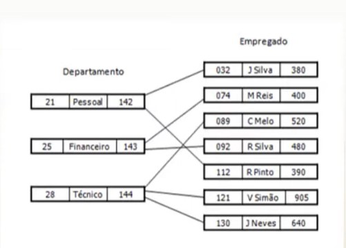
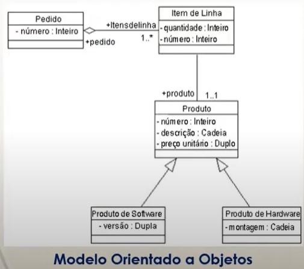
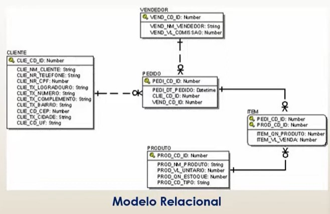

Notação de Modelagem de Dados
Após a definição de um modelo conceitual de dados, a próxima etapa em um projeto de Banco de Dados é a construção de um modelo lógico. O modelo lógico descreve as estruturas que serão armazenadas no Banco de Dados, representando graficamente os dados de uma forma lógica. A técnica de modelagem de dados mais amplamente utilizada é a abordagem entidade-relacionamento, que permite a construção de Diagramas de Entidade-Relacionamento (DER).
Existem várias notações de modelagem de dados, sendo a mais comum a notação relacional.
Notação de Rede: é representada por um conjunto de registros, onde as relações são realizadas por meio de ponteiros;
Representação gráfica:

Notação Hierárquica: similar à notação em rede, mas os registros são armazenados em uma estrutura de árvore;
Representação gráfica:

Notação Orientada a Objetos: sugere que os dados são armazenados em estruturas de objetos, conforme o nome indica;
Representação gráfica:

Notação Relacional: utiliza um conjunto de tabelas compostas por linhas e colunas.
Representação gráfica:

Notação Relacional
Um banco de dados relacional é composto por tabelas, que também são chamadas de relações. A terminologia "tabela" é mais comum em produtos comerciais e na prática.
Tabelas consistem em um conjunto não ordenado de linhas (também chamadas de tuplas). Cada linha é composta por uma série de campos (atributos), e cada campo é identificado por um nome. O conjunto de campos de todas as linhas de uma tabela forma uma coluna.
Representação gráfica:

Chaves:
As chaves identificam linhas e relacionam tabelas em um Banco de Dados Relacional.
Em um Banco de Dados Relacional, existem basicamente 3 tipos de chaves que devem ser considerados:
Chave Primária: Uma coluna (ou uma combinação delas) cujos valores distinguem uma linha das demais dentro da mesma tabela. Uma chave primária não pode conter valores nulos e não pode se repetir. Por exemplo: o CPF de um indivíduo.
Chave Estrangeira: Uma coluna (ou uma combinação de colunas) cujos valores aparecem obrigatoriamente na chave primária de uma tabela. Uma chave Estrangeira permite a implementação dos relacionamentos entre tabelas de um Banco de Dados Relacional.
Chave Candidata (ou Alternativa): Uma coluna (ou uma combinação de colunas) que é candidata a ser uma chave primária. Possui as mesmas características de uma chave primária, mas não foi escolhida pelo projetista do Banco de Dados Relacional.